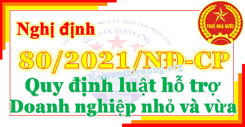

Ngày 26/8/2021 Chính phủ ban hành Nghị định 80/2021/NĐ-CP quy định chi tiết và hướng dẫn thi hành một số điều của Luật Hỗ trợ doanh nghiệp nhỏ và vừa, áp dụng từ ngày 15/10/2021.

---------------------------------------------------------------------------
|
CHÍNH PHỦ ------- |
CỘNG HÒA XÃ HỘI CHỦ NGHĨA VIỆT NAM Độc lập - Tự do - Hạnh phúc --------------- |
| Số: 80/2021/NĐ-CP | Hà Nội, ngày 26 tháng 8 năm 2021 |
NGHỊ ĐỊNH
QUY ĐỊNH CHI TIẾT VÀ HƯỚNG DẪN THI HÀNH MỘT SỐ ĐIỀU CỦA LUẬT HỖ TRỢ DOANH NGHIỆP NHỎ VÀ VỪA
Căn cứ Luật Tổ chức Chính phủ ngày 19 tháng 6 năm 2015;QUY ĐỊNH CHI TIẾT VÀ HƯỚNG DẪN THI HÀNH MỘT SỐ ĐIỀU CỦA LUẬT HỖ TRỢ DOANH NGHIỆP NHỎ VÀ VỪA
Căn cứ Luật Tổ chức chính quyền địa phương ngày 19 tháng 6 năm 2015;
Căn cứ Luật sửa đổi, bổ sung một số điều của Luật Tổ chức Chính phủ và Luật Tổ chức chính quyền địa phương ngày 22 tháng 11 năm 2019;
Căn cứ Luật Ngân sách nhà nước ngày 25 tháng 6 năm 2015;
Căn cứ Luật Đầu tư công ngày 13 tháng 6 năm 2019;
Căn cứ Luật Hỗ trợ doanh nghiệp nhỏ và vừa ngày 12 tháng 6 năm 2017;
Theo đề nghị của Bộ trưởng Bộ Kế hoạch và Đầu tư;
Chính phủ ban hành Nghị định quy định chi tiết và hướng dẫn thi hành một số điều của Luật Hỗ trợ doanh nghiệp nhỏ và vừa.
Chương I
NHỮNG QUY ĐỊNH CHUNG
Điều 1. Phạm vi điều chỉnhNHỮNG QUY ĐỊNH CHUNG
Nghị định này quy định chi tiết và hướng dẫn thi hành một số điều của Luật Hỗ trợ doanh nghiệp nhỏ và vừa về tiêu chí xác định doanh nghiệp nhỏ và vừa, hỗ trợ công nghệ, hỗ trợ thông tin, hỗ trợ tư vấn, hỗ trợ phát triển nguồn nhân lực, hỗ trợ doanh nghiệp nhỏ và vừa chuyển đổi từ hộ kinh doanh, doanh nghiệp nhỏ và vừa khởi nghiệp sáng tạo, doanh nghiệp nhỏ và vừa tham gia cụm liên kết ngành, chuỗi giá trị; trách nhiệm của các cơ quan, tổ chức trong việc thực hiện hỗ trợ doanh nghiệp nhỏ và vừa.
Điều 2. Đối tượng áp dụng
1. Doanh nghiệp được thành lập, tổ chức và hoạt động theo quy định của pháp luật về doanh nghiệp, đáp ứng các tiêu chí xác định doanh nghiệp nhỏ và vừa theo quy định tại Điều 5 Nghị định này.
2. Cơ quan, tổ chức và cá nhân liên quan đến hỗ trợ doanh nghiệp nhỏ và vừa.
Điều 3. Giải thích từ ngữ
1. Đề án hỗ trợ doanh nghiệp nhỏ và vừa: Là một tập hợp các nội dung có liên quan đến nhau, sử dụng các nguồn lực nhằm đạt được mục tiêu hỗ trợ doanh nghiệp nhỏ và vừa hằng năm, trung hạn hoặc dài hạn. Đề án bao gồm các nội dung: mục tiêu; đối tượng và điều kiện hỗ trợ; trình tự, thủ tục lựa chọn; nội dung hỗ trợ; nguồn lực thực hiện; cơ chế quản lý, giám sát và đánh giá kết quả thực hiện; thời gian thực hiện Đề án; các nội dung khác (nếu có).
2. Chương trình hỗ trợ doanh nghiệp nhỏ và vừa: Là một tập hợp các nội dung, nhiệm vụ hỗ trợ doanh nghiệp nhỏ và vừa do một cơ quan, tổ chức chủ trì thực hiện trong một thời hạn nhất định.
3. Kế hoạch hỗ trợ doanh nghiệp nhỏ và vừa: Là một tập hợp các mục tiêu, giải pháp và kinh phí thực hiện hỗ trợ doanh nghiệp nhỏ và vừa được tổng hợp, cân đối trong kế hoạch phát triển kinh tế - xã hội hằng năm và 05 năm của các bộ, cơ quan ngang bộ, cơ quan thuộc Chính phủ, Ủy ban nhân dân cấp tỉnh và của quốc gia.
4. Cơ quan, tổ chức hỗ trợ doanh nghiệp nhỏ và vừa: Là các cơ quan, tổ chức được cấp có thẩm quyền giao nhiệm vụ tổ chức triển khai hoạt động hỗ trợ doanh nghiệp nhỏ và vừa.
5. Cổng thông tin quốc gia hỗ trợ doanh nghiệp nhỏ và vừa (sau đây gọi tắt là Cổng thông tin): Là điểm truy cập trên môi trường mạng tại địa chỉ www.business.gov.vn để hỗ trợ doanh nghiệp nhỏ và vừa thông qua việc tích hợp thông tin về mạng lưới tư vấn viên hỗ trợ doanh nghiệp nhỏ và vừa; kế hoạch, chương trình, dự án, đề án, hoạt động hỗ trợ doanh nghiệp nhỏ và vừa; chỉ dẫn kinh doanh, tín dụng, thị trường, sản phẩm, công nghệ, ươm tạo doanh nghiệp và các thông tin khác nhằm cung cấp thông tin, dịch vụ phục vụ cho hoạt động của doanh nghiệp nhỏ và vừa, nhiệm vụ quản lý nhà nước về hỗ trợ, phát triển doanh nghiệp và theo nhu cầu của các tổ chức, cá nhân được quy định tại Luật Hỗ trợ doanh nghiệp nhỏ và vừa và Nghị định này.
6. Cơ sở dữ liệu hỗ trợ doanh nghiệp nhỏ và vừa: Là tập hợp tài liệu, tri thức, kinh nghiệm, thông tin về doanh nghiệp nhỏ và vừa theo tiêu chí tại Luật Hỗ trợ doanh nghiệp nhỏ và vừa và Điều 5 Nghị định này. Cơ sở dữ liệu hỗ trợ doanh nghiệp nhỏ và vừa đồng thời là một nền tảng thông tin thống nhất đáp ứng nhu cầu về tiếp cận, khai thác thông tin, dữ liệu, xây dựng chiến lược, hoạch định chính sách và quản lý nhà nước về hỗ trợ doanh nghiệp do Bộ Kế hoạch và Đầu tư quản lý, vận hành. Cơ sở dữ liệu hỗ trợ doanh nghiệp nhỏ và vừa có sự kết nối, tích hợp, liên thông và trao đổi dữ liệu với các hệ thống có liên quan của Bộ Kế hoạch và Đầu tư, các bộ, cơ quan ngang bộ, cơ quan thuộc Chính phủ và Ủy ban nhân dân cấp tỉnh.
7. Mạng lưới tư vấn viên: Là tập hợp các tổ chức tư vấn và cá nhân tư vấn, có chuyên môn thuộc các lĩnh vực khác nhau đáp ứng nhu cầu của doanh nghiệp nhỏ và vừa, được các bộ, cơ quan ngang bộ có thẩm quyền công nhận trên cơ sở các tiêu chí được ban hành và được công bố công khai để hỗ trợ doanh nghiệp nhỏ và vừa.
8. Doanh nghiệp nhỏ và vừa sử dụng nhiều lao động nữ: Là doanh nghiệp có số lao động nữ chiếm từ 50% trở lên trên tổng số lao động trong trường hợp doanh nghiệp sử dụng dưới 100 lao động; chiếm từ 30% trở lên trên tổng số lao động trong trường hợp doanh nghiệp sử dụng từ 100 lao động trở lên.
9. Đào tạo trực tiếp tại doanh nghiệp nhỏ và vừa: Là hình thức đào tạo tại doanh nghiệp, được thiết kế theo nhu cầu nhằm hỗ trợ giải quyết, khắc phục các vấn đề tồn tại cụ thể của doanh nghiệp.
10. Đào tạo trực tuyến cho doanh nghiệp nhỏ và vừa: Là hình thức đào tạo thông qua môi trường mạng, sử dụng công nghệ thông tin, truyền thông đa phương tiện để truyền đạt, cung cấp các kỹ năng, kiến thức cho doanh nghiệp.
11. Doanh nghiệp đầu chuỗi: Là các doanh nghiệp ở quy mô khác nhau có mối liên kết thương mại với các doanh nghiệp nhỏ và vừa trong chuỗi giá trị; định hướng, kiểm soát toàn bộ hoặc các công đoạn khác nhau của chuỗi giá trị nhằm tạo ra giá trị tăng thêm cho sản phẩm, dịch vụ và thực hiện bán sản phẩm, dịch vụ ở thị trường trong nước và nước ngoài.
Điều 4. Nguyên tắc thực hiện hỗ trợ
1. Căn cứ vào khả năng cân đối nguồn lực và định hướng ưu tiên hỗ trợ trong từng thời kỳ, cơ quan, tổ chức hỗ trợ doanh nghiệp nhỏ và vừa quyết định số lượng doanh nghiệp đủ điều kiện được nhận hỗ trợ đảm bảo nguyên tắc như sau:
a) Doanh nghiệp nhỏ và vừa nộp hồ sơ trước được hỗ trợ trước;
b) Doanh nghiệp nhỏ và vừa do phụ nữ làm chủ, doanh nghiệp nhỏ và vừa sử dụng nhiều lao động nữ và doanh nghiệp nhỏ và vừa là doanh nghiệp xã hội theo quy định của pháp luật được hỗ trợ trước.
2. Trường hợp doanh nghiệp nhỏ và vừa đồng thời đáp ứng điều kiện của các mức hỗ trợ khác nhau trong cùng một nội dung hỗ trợ theo quy định của Nghị định này và quy định khác của pháp luật có liên quan thì doanh nghiệp được lựa chọn một mức hỗ trợ có lợi nhất.
3. Ngoài các nội dung hỗ trợ riêng theo quy mô doanh nghiệp siêu nhỏ, doanh nghiệp nhỏ và doanh nghiệp vừa quy định chi tiết tại Nghị định này, các nội dung hỗ trợ chung cho doanh nghiệp nhỏ và vừa được áp dụng cho cả doanh nghiệp siêu nhỏ, doanh nghiệp nhỏ và doanh nghiệp vừa đáp ứng điều kiện hỗ trợ quy định tại Nghị định này.
4. Doanh nghiệp nhỏ và vừa chuyển đổi từ hộ kinh doanh, doanh nghiệp nhỏ và vừa khởi nghiệp sáng tạo, doanh nghiệp nhỏ và vừa tham gia cụm liên kết ngành, chuỗi giá trị được hưởng các nội dung hỗ trợ theo quy định tại Chương IV và các nội dung hỗ trợ khác không trùng lặp quy định tại Chương III Nghị định này.
5. Căn cứ chức năng, nhiệm vụ và trên cơ sở năng lực thực hiện, cơ quan, tổ chức hỗ trợ doanh nghiệp nhỏ và vừa trực tiếp cung cấp dịch vụ hỗ trợ hoặc phối hợp với các cơ quan, tổ chức, cá nhân có năng lực để cung cấp dịch vụ hỗ trợ cho doanh nghiệp nhỏ và vừa đủ điều kiện.
Chương II
TIÊU CHÍ XÁC ĐỊNH DOANH NGHIỆP NHỎ VÀ VỪA
Điều 5. Tiêu chí xác định doanh nghiệp nhỏ và vừaTIÊU CHÍ XÁC ĐỊNH DOANH NGHIỆP NHỎ VÀ VỪA
1. Doanh nghiệp siêu nhỏ trong lĩnh vực nông nghiệp, lâm nghiệp, thủy sản; lĩnh vực công nghiệp và xây dựng sử dụng lao động có tham gia bảo hiểm xã hội bình quân năm không quá 10 người và tổng doanh thu của năm không quá 3 tỷ đồng hoặc tổng nguồn vốn của năm không quá 3 tỷ đồng.
Doanh nghiệp siêu nhỏ trong lĩnh vực thương mại và dịch vụ sử dụng lao động có tham gia bảo hiểm xã hội bình quân năm không quá 10 người và tổng doanh thu của năm không quá 10 tỷ đồng hoặc tổng nguồn vốn của năm không quá 3 tỷ đồng.
2. Doanh nghiệp nhỏ trong lĩnh vực nông nghiệp, lâm nghiệp, thủy sản; lĩnh vực công nghiệp và xây dựng sử dụng lao động có tham gia bảo hiểm xã hội bình quân năm không quá 100 người và tổng doanh thu của năm không quá 50 tỷ đồng hoặc tổng nguồn vốn của năm không quá 20 tỷ đồng, nhưng không phải là doanh nghiệp siêu nhỏ theo quy định tại khoản 1 Điều này.
Doanh nghiệp nhỏ trong lĩnh vực thương mại và dịch vụ sử dụng lao động có tham gia bảo hiểm xã hội bình quân năm không quá 50 người và tổng doanh thu của năm không quá 100 tỷ đồng hoặc tổng nguồn vốn của năm không quá 50 tỷ đồng, nhưng không phải là doanh nghiệp siêu nhỏ theo quy định tại khoản 1 Điều này.
3. Doanh nghiệp vừa trong lĩnh vực nông nghiệp, lâm nghiệp, thủy sản; lĩnh vực công nghiệp và xây dựng sử dụng lao động có tham gia bảo hiểm xã hội bình quân năm không quá 200 người và tổng doanh thu của năm không quá 200 tỷ đồng hoặc tổng nguồn vốn của năm không quá 100 tỷ đồng, nhưng không phải là doanh nghiệp siêu nhỏ, doanh nghiệp nhỏ theo quy định tại khoản 1, khoản 2 Điều này.
Doanh nghiệp vừa trong lĩnh vực thương mại và dịch vụ sử dụng lao động có tham gia bảo hiểm xã hội bình quân năm không quá 100 người và tổng doanh thu của năm không quá 300 tỷ đồng hoặc tổng nguồn vốn của năm không quá 100 tỷ đồng, nhưng không phải là doanh nghiệp siêu nhỏ, doanh nghiệp nhỏ theo quy định tại khoản 1, khoản 2 Điều này.
Điều 6. Xác định lĩnh vực hoạt động của doanh nghiệp nhỏ và vừa
Lĩnh vực hoạt động của doanh nghiệp nhỏ và vừa được xác định căn cứ vào ngành, nghề kinh doanh chính mà doanh nghiệp đã đăng ký với cơ quan đăng ký kinh doanh.
Điều 7. Xác định số lao động sử dụng có tham gia bảo hiểm xã hội bình quân năm của doanh nghiệp nhỏ và vừa
1. Số lao động sử dụng có tham gia bảo hiểm xã hội là toàn bộ số lao động do doanh nghiệp quản lý, sử dụng và trả lương, trả công tham gia bảo hiểm xã hội theo pháp luật về bảo hiểm xã hội.
2. Số lao động sử dụng có tham gia bảo hiểm xã hội bình quân năm được tính bằng tổng số lao động sử dụng có tham gia bảo hiểm xã hội của tất cả các tháng trong năm trước liền kề chia cho 12 tháng.
Số lao động sử dụng có tham gia bảo hiểm xã hội của tháng được xác định tại thời điểm cuối tháng và căn cứ trên chứng từ nộp bảo hiểm xã hội của tháng đó mà doanh nghiệp nộp cho cơ quan bảo hiểm xã hội.
3. Trường hợp doanh nghiệp hoạt động dưới 01 năm, số lao động sử dụng có tham gia bảo hiểm xã hội bình quân năm được tính bằng tổng số lao động sử dụng có tham gia bảo hiểm xã hội của các tháng hoạt động chia cho số tháng hoạt động.
Điều 8. Xác định tổng nguồn vốn của doanh nghiệp nhỏ và vừa
1. Tổng nguồn vốn của năm được xác định trong bảng cân đối kế toán thể hiện trên Báo cáo tài chính của năm trước liền kề mà doanh nghiệp nộp cho cơ quan quản lý thuế. Tổng nguồn vốn của năm được xác định tại thời điểm cuối năm.
2. Trường hợp doanh nghiệp hoạt động dưới 01 năm, tổng nguồn vốn được xác định trong bảng cân đối kế toán của doanh nghiệp tại thời điểm cuối quý liền kề thời điểm doanh nghiệp đăng ký hưởng nội dung hỗ trợ.
Điều 9. Xác định tổng doanh thu của doanh nghiệp nhỏ và vừa
1. Tổng doanh thu của năm là tổng doanh thu bán hàng hóa, cung cấp dịch vụ của doanh nghiệp và được xác định trên Báo cáo tài chính của năm trước liền kề mà doanh nghiệp nộp cho cơ quan quản lý thuế.
2. Trường hợp doanh nghiệp hoạt động dưới 01 năm hoặc trên 01 năm nhưng chưa phát sinh doanh thu thì doanh nghiệp căn cứ vào tiêu chí tổng nguồn vốn quy định tại Điều 8 Nghị định này để xác định doanh nghiệp nhỏ và vừa.
Điều 10. Xác định và kê khai doanh nghiệp nhỏ và vừa
1. Doanh nghiệp nhỏ và vừa căn cứ vào mẫu quy định tại Phụ lục ban hành kèm theo Nghị định này để tự xác định và kê khai quy mô là doanh nghiệp siêu nhỏ, doanh nghiệp nhỏ, doanh nghiệp vừa và nộp cho cơ quan, tổ chức hỗ trợ doanh nghiệp nhỏ và vừa. Doanh nghiệp nhỏ và vừa chịu trách nhiệm trước pháp luật về việc kê khai.
2. Trường hợp doanh nghiệp phát hiện kê khai quy mô không chính xác, doanh nghiệp chủ động thực hiện điều chỉnh và kê khai lại. Việc kê khai lại phải được thực hiện trước thời điểm doanh nghiệp nhỏ và vừa được hưởng nội dung hỗ trợ.
3. Trường hợp doanh nghiệp cố ý kê khai không trung thực về quy mô để được hưởng hỗ trợ thì doanh nghiệp phải chịu trách nhiệm trước pháp luật và hoàn trả toàn bộ kinh phí đã nhận hỗ trợ.
4. Căn cứ vào thời điểm doanh nghiệp đề xuất hỗ trợ, cơ quan, tổ chức hỗ trợ doanh nghiệp nhỏ và vừa đối chiếu thông tin về doanh nghiệp trên Cổng thông tin đăng ký doanh nghiệp quốc gia để xác định thông tin doanh nghiệp kê khai đảm bảo đúng đối tượng hỗ trợ.
Chương III
HỖ TRỢ CÔNG NGHỆ, THÔNG TIN, TƯ VẤN VÀ PHÁT TRIỂN NGUỒN NHÂN LỰC
Điều 11. Hỗ trợ công nghệ cho doanh nghiệp nhỏ và vừaHỖ TRỢ CÔNG NGHỆ, THÔNG TIN, TƯ VẤN VÀ PHÁT TRIỂN NGUỒN NHÂN LỰC
1. Hỗ trợ tối đa 50% giá trị hợp đồng tư vấn giải pháp chuyển đổi số cho doanh nghiệp về quy trình kinh doanh, quy trình quản trị, quy trình sản xuất, quy trình công nghệ và chuyển đổi mô hình kinh doanh nhưng không quá 50 triệu đồng/hợp đồng/năm đối với doanh nghiệp nhỏ và không quá 100 triệu đồng/hợp đồng/năm đối với doanh nghiệp vừa.
2. Hỗ trợ tối đa 50% chi phí cho doanh nghiệp thuê, mua các giải pháp chuyển đổi số để tự động hóa, nâng cao hiệu quả quy trình kinh doanh, quy trình quản trị, quy trình sản xuất, quy trình công nghệ trong doanh nghiệp và chuyển đổi mô hình kinh doanh nhưng không quá 20 triệu đồng/năm đối với doanh nghiệp siêu nhỏ; không quá 50 triệu đồng/năm đối với doanh nghiệp nhỏ và không quá 100 triệu đồng/năm đối với doanh nghiệp vừa.
3. Hỗ trợ tối đa 50% giá trị hợp đồng tư vấn xác lập quyền sở hữu trí tuệ; tư vấn quản lý và phát triển các sản phẩm, dịch vụ được bảo hộ quyền sở hữu trí tuệ của doanh nghiệp nhưng không quá 100 triệu đồng/hợp đồng/năm/doanh nghiệp.
4. Hỗ trợ tối đa 50% giá trị hợp đồng tư vấn chuyển giao công nghệ phù hợp với doanh nghiệp nhưng không quá 100 triệu đồng/hợp đồng/năm/doanh nghiệp.
5. Bộ, cơ quan ngang bộ, cơ quan thuộc Chính phủ, Ủy ban nhân dân cấp tỉnh triển khai các dự án đầu tư hỗ trợ doanh nghiệp nhỏ và vừa thông qua xây dựng mới cơ sở ươm tạo, cơ sở kỹ thuật, khu làm việc chung; cải tạo, nâng cấp cơ sở hạ tầng có sẵn để hình thành cơ sở ươm tạo, cơ sở kỹ thuật, khu làm việc chung; mua sắm, lắp đặt trang thiết bị, máy móc, phòng nghiên cứu, phòng thí nghiệm, hệ thống công nghệ thông tin cho cơ sở ươm tạo, cơ sở kỹ thuật, khu làm việc chung hỗ trợ doanh nghiệp nhỏ và vừa.
Điều 12. Hỗ trợ thông tin cho doanh nghiệp nhỏ và vừa
1. Doanh nghiệp nhỏ và vừa được miễn phí truy cập các thông tin quy định tại khoản 1 Điều 14 Luật Hỗ trợ doanh nghiệp nhỏ và vừa trên Cổng thông tin và trang thông tin điện tử của các bộ, cơ quan ngang bộ, cơ quan thuộc Chính phủ và Ủy ban nhân dân cấp tỉnh.
2. Bộ, cơ quan ngang bộ, cơ quan thuộc Chính phủ, Ủy ban nhân dân cấp tỉnh được cấp tài khoản trên Cổng thông tin để cung cấp các thông tin quy định tại khoản 1 Điều 14 Luật Hỗ trợ doanh nghiệp nhỏ và vừa; công khai, theo dõi và cập nhật thông tin hỗ trợ doanh nghiệp nhỏ và vừa theo quy định tại Điều 29 Luật Hỗ trợ doanh nghiệp nhỏ và vừa. Cơ quan, tổ chức hỗ trợ doanh nghiệp nhỏ và vừa, doanh nghiệp, tổ chức, cá nhân khác có nhu cầu cung cấp thông tin, tương tác và kết nối với các đối tác tham gia trên Cổng thông tin có thể đề nghị cấp tài khoản. Tài khoản sử dụng trên Cổng thông tin được quản lý tập trung trên Cổng thông tin.
3. Cổng thông tin do Bộ Kế hoạch và Đầu tư xây dựng, duy trì, vận hành và kết nối với trang thông tin điện tử của các bộ, cơ quan ngang bộ, cơ quan thuộc Chính phủ, Ủy ban nhân dân cấp tỉnh nhằm cung cấp thông tin quy định tại khoản 1 Điều 14 Luật Hỗ trợ doanh nghiệp nhỏ và vừa và các thông tin khác cho doanh nghiệp, tổ chức, cá nhân có nhu cầu tra cứu.
4. Kinh phí xây dựng cơ sở hạ tầng thông tin, phần mềm cho hoạt động của Cổng thông tin, cơ sở dữ liệu hỗ trợ doanh nghiệp nhỏ và vừa được bố trí từ nguồn vốn đầu tư công theo quy định của pháp luật về đầu tư công và các nguồn vốn hợp pháp khác (nếu có).
Kinh phí nâng cấp, duy trì, quản lý, vận hành Cổng thông tin và thu thập, cập nhật thông tin vào cơ sở dữ liệu hỗ trợ doanh nghiệp nhỏ và vừa được bố trí từ nguồn kinh phí thường xuyên theo quy định của pháp luật về ngân sách nhà nước và các nguồn hợp pháp khác (nếu có).
Điều 13. Hỗ trợ tư vấn cho doanh nghiệp nhỏ và vừa
1. Mạng lưới tư vấn viên
a) Mạng lưới tư vấn viên được xây dựng trên cơ sở cá nhân, tổ chức tư vấn đã và đang hoạt động theo quy định của pháp luật chuyên ngành hoặc hình thành mới, đảm bảo nguyên tắc:
Đối với cá nhân tư vấn phải đảm bảo về trình độ đào tạo, trình độ chuyên môn nghiệp vụ, kinh nghiệm công tác phù hợp với nhu cầu của doanh nghiệp nhỏ và vừa và tiêu chí về tư vấn viên của bộ, cơ quan ngang bộ nơi cá nhân tư vấn dự kiến đăng ký.
Đối với tổ chức tư vấn phải đảm bảo đáp ứng các điều kiện theo quy định của pháp luật chuyên ngành, phù hợp với nhu cầu của doanh nghiệp nhỏ và vừa và tiêu chí về tổ chức tư vấn của bộ, cơ quan ngang bộ nơi tổ chức tư vấn dự kiến đăng ký.
b) Hồ sơ đăng ký vào mạng lưới tư vấn viên
Đối với cá nhân tư vấn, hồ sơ bao gồm: Đơn đăng ký tham gia mạng lưới tư vấn viên; Sơ yếu lý lịch và hồ sơ tóm tắt năng lực; bản sao có chứng thực văn bằng đào tạo; bản sao có chứng thực các văn bản, giấy tờ có liên quan được cơ quan có thẩm quyền cấp.
Đối với tổ chức tư vấn, hồ sơ bao gồm: Đơn đăng ký tham gia mạng lưới tư vấn viên; bản sao có chứng thực Giấy chứng nhận đăng ký doanh nghiệp hoặc Quyết định thành lập; hồ sơ tóm tắt năng lực; bản sao có chứng thực hồ sơ của các cá nhân tư vấn thuộc tổ chức; bản sao có chứng thực các văn bản, giấy tờ chứng minh đủ điều kiện kinh doanh theo quy định của pháp luật (đối với doanh nghiệp kinh doanh ngành, nghề kinh doanh có điều kiện).
c) Cá nhân, tổ chức tư vấn nộp hồ sơ quy định tại điểm b khoản này thông qua hình thức trực tiếp hoặc trực tuyến tới đơn vị được giao đầu mối tổ chức hoạt động mạng lưới tư vấn viên thuộc bộ, cơ quan ngang bộ để được công nhận vào mạng lưới tư vấn viên và được công bố trên trang thông tin điện tử của bộ, cơ quan ngang bộ trong thời hạn 10 ngày làm việc.
Trường hợp cá nhân, tổ chức tư vấn chưa đủ điều kiện để được công nhận, đơn vị được giao đầu mối tổ chức hoạt động mạng lưới tư vấn viên thuộc bộ, cơ quan ngang bộ gửi thông báo lý do chưa đủ điều kiện thông qua hình thức trực tiếp hoặc trực tuyến tới cá nhân, tổ chức tư vấn trong thời hạn 10 ngày làm việc kể từ ngày nhận được hồ sơ đăng ký.
Cá nhân, tổ chức tư vấn được tham gia mạng lưới tư vấn viên của nhiều bộ, cơ quan ngang bộ nếu đáp ứng điều kiện, tiêu chí theo quy định.
d) Sau khi được công nhận vào mạng lưới tư vấn viên và được công bố trên trang thông tin điện tử của bộ, cơ quan ngang bộ, tư vấn viên truy cập vào Cổng thông tin (tại địa chỉ www.business.gov.vn) để đăng ký vào cơ sở dữ liệu mạng lưới tư vấn viên và thực hiện tư vấn cho doanh nghiệp nhỏ và vừa theo quy định tại Nghị định này.
đ) Kinh phí để bộ, cơ quan ngang bộ hình thành, vận hành, quản lý, duy trì hoạt động của mạng lưới tư vấn viên và kinh phí bồi dưỡng, đào tạo phát triển mạng lưới tư vấn viên được tổng hợp trong kinh phí hỗ trợ doanh nghiệp nhỏ và vừa hằng năm của bộ, cơ quan ngang bộ và nguồn kinh phí hợp pháp khác (nếu có).
2. Nội dung hỗ trợ tư vấn cho doanh nghiệp nhỏ và vừa
Doanh nghiệp nhỏ và vừa tiếp cận mạng lưới tư vấn viên để được hỗ trợ sử dụng dịch vụ tư vấn về nhân sự, tài chính, sản xuất, bán hàng, thị trường, quản trị nội bộ và các nội dung khác liên quan tới hoạt động sản xuất - kinh doanh của doanh nghiệp (không bao gồm tư vấn về thủ tục hành chính, pháp lý theo quy định của pháp luật chuyên ngành) như sau:
a) Hỗ trợ 100% giá trị hợp đồng tư vấn nhưng không quá 50 triệu đồng/năm/doanh nghiệp đối với doanh nghiệp siêu nhỏ hoặc không quá 70 triệu đồng/năm/doanh nghiệp đối với doanh nghiệp siêu nhỏ do phụ nữ làm chủ, doanh nghiệp siêu nhỏ sử dụng nhiều lao động nữ và doanh nghiệp siêu nhỏ là doanh nghiệp xã hội;
b) Hỗ trợ tối đa 50% giá trị hợp đồng tư vấn nhưng không quá 100 triệu đồng/năm/doanh nghiệp đối với doanh nghiệp nhỏ hoặc không quá 150 triệu đồng/năm/doanh nghiệp đối với doanh nghiệp nhỏ do phụ nữ làm chủ, doanh nghiệp nhỏ sử dụng nhiều lao động nữ và doanh nghiệp nhỏ là doanh nghiệp xã hội;
c) Hỗ trợ tối đa 30% giá trị hợp đồng tư vấn nhưng không quá 150 triệu đồng/năm/doanh nghiệp đối với doanh nghiệp vừa hoặc không quá 200 triệu đồng/năm/doanh nghiệp đối với doanh nghiệp vừa do phụ nữ làm chủ, doanh nghiệp vừa sử dụng nhiều lao động nữ và doanh nghiệp vừa là doanh nghiệp xã hội.
Điều 14. Hỗ trợ phát triển nguồn nhân lực cho doanh nghiệp nhỏ và vừa
1. Hỗ trợ đào tạo trực tiếp về khởi sự kinh doanh và quản trị doanh nghiệp
a) Hỗ trợ 100% tổng chi phí của một khóa đào tạo về khởi sự kinh doanh và tối đa 70% tổng chi phí của một khoá quản trị doanh nghiệp cho doanh nghiệp nhỏ và vừa;
b) Miễn học phí cho học viên của doanh nghiệp nhỏ và vừa thuộc địa bàn kinh tế - xã hội đặc biệt khó khăn, doanh nghiệp nhỏ và vừa do phụ nữ làm chủ, doanh nghiệp nhỏ và vừa sử dụng nhiều lao động nữ và doanh nghiệp nhỏ và vừa là doanh nghiệp xã hội khi tham gia khóa đào tạo quản trị doanh nghiệp.
2. Hỗ trợ đào tạo trực tuyến về khởi sự kinh doanh và quản trị doanh nghiệp
a) Miễn phí truy cập và tham gia các bài giảng trực tuyến có sẵn trên hệ thống đào tạo trực tuyến của Bộ Kế hoạch và Đầu tư và Ủy ban nhân dân cấp tỉnh. Doanh nghiệp nhỏ và vừa truy cập hệ thống đào tạo trực tuyến để học tập theo thời gian phù hợp. Hệ thống đào tạo trực tuyến bao gồm nền tảng quản trị đào tạo trực tuyến, nền tảng đào tạo trực tuyến và hệ thống nội dung bài giảng trực tuyến.
Kinh phí để Bộ Kế hoạch và Đầu tư, Ủy ban nhân dân cấp tỉnh xây dựng, duy trì, nâng cấp hệ thống đào tạo trực tuyến; khảo sát về nhu cầu đào tạo trực tuyến, truyền thông, quảng bá hệ thống đào tạo trực tuyến cho doanh nghiệp nhỏ và vừa được tổng hợp trong kinh phí hỗ trợ doanh nghiệp nhỏ và vừa hằng năm của Bộ Kế hoạch và Đầu tư, Ủy ban nhân dân cấp tỉnh và nguồn kinh phí hợp pháp khác (nếu có).
b) Miễn phí tham gia các khoá đào tạo trực tuyến, tương tác trực tiếp với doanh nghiệp nhỏ và vừa thông qua các công cụ dạy học trực tuyến có sẵn ứng dụng trên các thiết bị điện tử thông minh của đối tượng được đào tạo (Zoom Cloud Meeting, Microsoft Teams, Google Classroom và các công cụ khác).
3. Hỗ trợ đào tạo trực tiếp tại doanh nghiệp nhỏ và vừa trong lĩnh vực sản xuất, chế biến
a) Hỗ trợ tối đa 70% tổng chi phí của một khóa đào tạo tại doanh nghiệp nhỏ và vừa nhưng không quá 01 khoá/năm/doanh nghiệp;
b) Hỗ trợ 100% tổng chi phí của một khoá đào tạo tại doanh nghiệp nhỏ và vừa do phụ nữ làm chủ, doanh nghiệp nhỏ và vừa sử dụng nhiều lao động nữ và doanh nghiệp nhỏ và vừa là doanh nghiệp xã hội nhưng không quá 01 khoá/năm/doanh nghiệp.
4. Hỗ trợ đào tạo nghề
Hỗ trợ chi phí đào tạo cho người lao động của doanh nghiệp nhỏ và vừa khi tham gia khóa đào tạo nghề trình độ sơ cấp hoặc chương trình đào tạo từ 03 tháng trở xuống. Các chi phí còn lại do doanh nghiệp nhỏ và vừa và người lao động thỏa thuận. Người lao động tham gia khóa đào tạo phải đáp ứng điều kiện đã làm việc trong doanh nghiệp nhỏ và vừa tối thiểu 06 tháng liên tục trước khi tham gia khoá đào tạo.
Chương IV
HỖ TRỢ DOANH NGHIỆP NHỎ VÀ VỪA CHUYỂN ĐỔI TỪ HỘ KINH DOANH, DOANH NGHIỆP NHỎ VÀ VỪA KHỞI NGHIỆP SÁNG TẠO, DOANH NGHIỆP NHỎ VÀ VỪA THAM GIA CỤM LIÊN KẾT NGÀNH, CHUỖI GIÁ TRỊ
Mục 1. HỖ TRỢ DOANH NGHIỆP NHỎ VÀ VỪA CHUYỂN ĐỔI TỪ HỘ KINH DOANHHỖ TRỢ DOANH NGHIỆP NHỎ VÀ VỪA CHUYỂN ĐỔI TỪ HỘ KINH DOANH, DOANH NGHIỆP NHỎ VÀ VỪA KHỞI NGHIỆP SÁNG TẠO, DOANH NGHIỆP NHỎ VÀ VỪA THAM GIA CỤM LIÊN KẾT NGÀNH, CHUỖI GIÁ TRỊ
Điều 15. Hỗ trợ tư vấn, hướng dẫn hồ sơ, thủ tục thành lập doanh nghiệp
1. Ủy ban nhân dân tỉnh, thành phố trực thuộc trung ương (gọi chung là Ủy ban nhân dân cấp tỉnh) giao Sở Kế hoạch và Đầu tư tư vấn, hướng dẫn miễn phí hộ kinh doanh đăng ký chuyển đổi thành doanh nghiệp về:
a) Trình tự, thủ tục, hồ sơ đăng ký thành lập doanh nghiệp;
b) Trình tự, thủ tục, hồ sơ đăng ký chứng nhận đủ điều kiện kinh doanh đối với các ngành nghề kinh doanh có điều kiện (nếu có).
2. Hộ kinh doanh đăng ký chuyển đổi thành doanh nghiệp có nhu cầu tư vấn, hướng dẫn các nội dung tại khoản 1 Điều này, gửi đề nghị hỗ trợ thông qua hình thức trực tiếp hoặc trực tuyến tới Sở Kế hoạch và Đầu tư. Hồ sơ đề nghị gồm: Bản sao hợp lệ Giấy đăng ký kinh doanh của hộ kinh doanh; Bản sao hợp lệ Giấy chứng nhận đăng ký mã số thuế; Bản sao hợp lệ chứng từ nộp lệ phí môn bài, các loại thuế và khoản nộp ngân sách nhà nước khác (nếu có), tờ khai thuế trong thời hạn 01 năm trước khi chuyển đổi.
Trong thời hạn 03 ngày làm việc kể từ ngày nhận được hồ sơ đề nghị, Sở Kế hoạch và Đầu tư có trách nhiệm tư vấn, hướng dẫn miễn phí các nội dung quy định tại khoản 1 Điều này.
Điều 16. Hỗ trợ đăng ký doanh nghiệp, công bố thông tin doanh nghiệp
Doanh nghiệp nhỏ và vừa chuyển đổi từ hộ kinh doanh được miễn lệ phí đăng ký doanh nghiệp lần đầu tại cơ quan đăng ký kinh doanh, miễn phí công bố nội dung đăng ký doanh nghiệp lần đầu tại Cổng thông tin đăng ký doanh nghiệp quốc gia.
Điều 17. Hỗ trợ thủ tục đăng ký ngành, nghề kinh doanh có điều kiện
Doanh nghiệp nhỏ và vừa chuyển đổi từ hộ kinh doanh tiếp tục hoạt động sản xuất kinh doanh thuộc ngành, nghề kinh doanh có điều kiện mà không thay đổi về quy mô thì gửi đề nghị tới cơ quan quản lý nhà nước có thẩm quyền để được cấp văn bản liên quan đến điều kiện đầu tư kinh doanh.
Trong thời hạn 03 ngày làm việc kể từ ngày nhận được đề nghị của doanh nghiệp, cơ quan quản lý nhà nước có thẩm quyền có trách nhiệm cấp văn bản liên quan đến điều kiện đầu tư kinh doanh cho doanh nghiệp.
Điều 18. Hỗ trợ lệ phí môn bài
Doanh nghiệp nhỏ và vừa chuyển đổi từ hộ kinh doanh được miễn lệ phí môn bài trong thời hạn 03 năm kể từ ngày được cấp Giấy chứng nhận đăng ký doanh nghiệp lần đầu.
Điều 19. Hỗ trợ tư vấn, hướng dẫn thủ tục hành chính thuế và chế độ kế toán
1. Doanh nghiệp nhỏ và vừa chuyển đổi từ hộ kinh doanh được tư vấn, hướng dẫn miễn phí về thủ tục hành chính thuế và chế độ kế toán trong thời hạn 03 năm kể từ ngày được cấp Giấy chứng nhận đăng ký doanh nghiệp lần đầu.
2. Ủy ban nhân dân cấp tỉnh giao Sở Tài chính thực hiện tư vấn, hướng dẫn miễn phí về thủ tục hành chính thuế và chế độ kế toán quy định tại khoản 1 Điều này.
Mục 2. HỖ TRỢ DOANH NGHIỆP NHỎ VÀ VỪA KHỞI NGHIỆP SÁNG TẠO
Điều 20. Tiêu chí xác định doanh nghiệp nhỏ và vừa khởi nghiệp sáng tạo
Doanh nghiệp nhỏ và vừa khởi nghiệp sáng tạo quy định tại khoản 2 Điều 3 Luật Hỗ trợ doanh nghiệp nhỏ và vừa được xác định theo một trong các tiêu chí sau đây:
1. Sản xuất, kinh doanh sản phẩm hình thành từ sáng chế, giải pháp hữu ích, kiểu dáng công nghiệp, thiết kế bố trí mạch tích hợp bán dẫn, phần mềm máy tính, ứng dụng trên điện thoại di động, điện toán đám mây, giông vật nuôi mới, giống cây trồng mới, giống thủy sản mới, giống cây lâm nghiệp mới.
2. Sản xuất, kinh doanh sản phẩm được tạo ra từ các dự án sản xuất thử nghiệm, sản phẩm mẫu và hoàn thiện công nghệ; sản xuất, kinh doanh sản phẩm đạt giải tại các cuộc thi khởi nghiệp, khởi nghiệp đổi mới sáng tạo quốc gia, quốc tế và các giải thưởng về khoa học và công nghệ theo quy định của pháp luật về giải thưởng khoa học và công nghệ.
3. Có giải pháp công nghệ hoặc mô hình kinh doanh mới có khả năng tăng trưởng doanh thu của doanh nghiệp đạt tối thiểu 20% trong 02 năm liên tiếp trên cơ sở phân tích các yếu tố thị phần, khả năng phát triển của sản phẩm, dịch vụ và khả năng cạnh tranh của doanh nghiệp.
Điều 21. Phương thức lựa chọn doanh nghiệp nhỏ và vừa khởi nghiệp sáng tạo để hỗ trợ
Căn cứ tiêu chí quy định tại Điều 20 Nghị định này và điều kiện hỗ trợ quy định tại khoản 1 Điều 17 Luật Hỗ trợ doanh nghiệp nhỏ và vừa, cơ quan, tổ chức hỗ trợ doanh nghiệp nhỏ và vừa lựa chọn doanh nghiệp để hỗ trợ theo một trong các phương thức sau đây:
1. Lựa chọn các doanh nghiệp có giải thưởng cấp quốc gia, quốc tế về khởi nghiệp sáng tạo hoặc sản phẩm, dự án về đổi mới sáng tạo; hoặc được cấp văn bằng bảo hộ đối với sáng chế; hoặc được cấp Giấy chứng nhận doanh nghiệp khoa học công nghệ, Giấy chứng nhận doanh nghiệp công nghệ cao, doanh nghiệp ứng dụng công nghệ cao.
2. Lựa chọn các doanh nghiệp đã được đầu tư hoặc cam kết đầu tư bởi các quỹ đầu tư khởi nghiệp sáng tạo; được hỗ trợ hoặc cam kết hỗ trợ bởi các khu làm việc chung, các tổ chức hỗ trợ khởi nghiệp sáng tạo, tổ chức cung cấp dịch vụ, cơ sở ươm tạo, cơ sở thúc đẩy kinh doanh, các trung tâm đổi mới sáng tạo theo quy định của pháp luật về đầu tư.
3. Lựa chọn thông qua Hội đồng:
Cơ quan, tổ chức hỗ trợ doanh nghiệp nhỏ và vừa có thể thành lập Hội đồng để lựa chọn doanh nghiệp khởi nghiệp sáng tạo theo các tiêu chí quy định tại Điều 20 Nghị định này, đảm bảo nguyên tắc sau:
a) Số lượng thành viên và cơ chế làm việc của Hội đồng do cơ quan thành lập Hội đồng quyết định;
b) Thành viên của Hội đồng có tối thiểu 50% là các chuyên gia tư vấn độc lập. Các thành viên còn lại là đại diện của cơ quan, tổ chức hỗ trợ doanh nghiệp nhỏ và vừa hoạt động theo cơ chế kiêm nhiệm;
c) Kinh phí hoạt động của Hội đồng được tổng hợp chung trong kinh phí quản lý hỗ trợ doanh nghiệp nhỏ và vừa của cơ quan, tổ chức hỗ trợ doanh nghiệp nhỏ và vừa.
Điều 22. Nội dung hỗ trợ doanh nghiệp nhỏ và vừa khởi nghiệp sáng tạo
1. Hỗ trợ sử dụng cơ sở kỹ thuật, cơ sở ươm tạo, khu làm việc chung
a) Hỗ trợ 100% chi phí sử dụng trang thiết bị tại cơ sở kỹ thuật, cơ sở ươm tạo, khu làm việc chung nhưng không quá 20 triệu đồng/năm/doanh nghiệp;
b) Hỗ trợ tối đa 50% chi phí thuê mặt bằng tại các cơ sở ươm tạo, khu làm việc chung nhưng không quá 5 triệu đồng/tháng/doanh nghiệp. Thời gian hỗ trợ tối đa là 03 năm kể từ ngày doanh nghiệp ký hợp đồng thuê mặt bằng.
2. Hỗ trợ tư vấn sở hữu trí tuệ, khai thác và phát triển tài sản trí tuệ
a) Hỗ trợ 100% giá trị hợp đồng tư vấn về thủ tục xác lập, chuyển giao, khai thác và bảo vệ quyền sở hữu trí tuệ ở trong nước nhưng không quá 30 triệu đồng/hợp đồng/năm/doanh nghiệp;
b) Hỗ trợ 100% giá trị hợp đồng tư vấn về xây dựng bản mô tả sáng chế, bản thiết kế kiểu dáng công nghiệp, bản thiết kế hệ thống nhận diện thương hiệu nhưng không quá 30 triệu đồng/hợp đồng/năm/doanh nghiệp;
c) Hỗ trợ 100% giá trị hợp đồng tư vấn quản lý và phát triển các sản phẩm, dịch vụ được bảo hộ quyền sở hữu trí tuệ ở trong nước nhưng không quá 50 triệu đồng/hợp đồng/năm/doanh nghiệp;
d) Hỗ trợ tối đa 50% giá trị hợp đồng tư vấn xác lập chuyển giao, khai thác và bảo vệ quyền sở hữu trí tuệ ở nước ngoài nhưng không quá 50 triệu đồng/hợp đồng/năm/doanh nghiệp.
3. Hỗ trợ thực hiện các thủ tục về tiêu chuẩn, quy chuẩn kỹ thuật, đo lường, chất lượng; thử nghiệm, hoàn thiện sản phẩm, mô hình kinh doanh mới
a) Hỗ trợ 100% giá trị hợp đồng tư vấn để doanh nghiệp xây dựng, áp dụng tiêu chuẩn cơ sở nhưng không quá 10 triệu đồng/hợp đồng/năm/doanh nghiệp và xây dựng, áp dụng hệ thống quản lý chất lượng nhưng không quá 50 triệu đồng/hợp đồng/năm/doanh nghiệp;
b) Hỗ trợ tối đa 50% chi phí thử nghiệm mẫu phương tiện đo; chi phí kiểm định, hiệu chuẩn, thử nghiệm phương tiện đo, chuẩn đo lường; chi phí cấp dấu định lượng của hàng đóng gói sẵn, phù hợp với yêu cầu kỹ thuật đo lường nhưng không quá 10 triệu đồng/năm/doanh nghiệp;
c) Hỗ trợ tối đa 50% chi phí thử nghiệm sản phẩm mới tại các đơn vị, tổ chức thử nghiệm sản phẩm hàng hóa nhưng không quá 30 triệu đồng/năm/doanh nghiệp;
d) Hỗ trợ tối đa 50% giá trị hợp đồng tư vấn hoàn thiện sản phẩm mới, dịch vụ mới, mô hình kinh doanh mới, công nghệ mới nhưng không quá 50 triệu đồng/hợp đồng/năm/doanh nghiệp.
4. Hỗ trợ công nghệ
Hỗ trợ tối đa 50% giá trị hợp đồng tư vấn tìm kiếm, lựa chọn, giải mã và chuyển giao công nghệ phù hợp với doanh nghiệp nhưng không quá 100 triệu đồng/hợp đồng/năm/doanh nghiệp.
5. Hỗ trợ đào tạo, huấn luyện chuyên sâu
a) Hỗ trợ tối đa 50% chi phí tham gia các khoá đào tạo chuyên sâu trong nước cho học viên của doanh nghiệp về xây dựng, phát triển sản phẩm; thương mại hóa sản phẩm; phát triển thương mại điện tử; gọi vốn đầu tư; phát triển thị trường; kết nối mạng lưới khởi nghiệp với các tổ chức, cá nhân nghiên cứu khoa học nhưng không quá 5 triệu đồng/học viên/năm và không quá 03 học viên/doanh nghiệp/năm;
b) Hỗ trợ tối đa 50% chi phí tham gia các khoá đào tạo, huấn luyện chuyên sâu ngắn hạn ở nước ngoài nhưng không quá 50 triệu đồng/học viên/năm và không quá 02 học viên/doanh nghiệp/năm.
6. Hỗ trợ về thông tin, truyền thông, xúc tiến thương mại, kết nối mạng lưới khởi nghiệp sáng tạo
a) Miễn phí tra cứu thông tin về hệ thống các tiêu chuẩn, quy chuẩn trong nước và quốc tế; các sáng chế, thông tin công nghệ, kết quả nghiên cứu khoa học; thông tin kết nối mạng lưới khởi nghiệp sáng tạo, thu hút đầu tư từ các quỹ đầu tư khởi nghiệp sáng tạo tại Cổng thông tin và các trang thông tin điện tử của các bộ, cơ quan ngang bộ, cơ quan thuộc Chính phủ, Ủy ban nhân dân cấp tỉnh;
b) Hỗ trợ tối đa 50% giá trị hợp đồng tư vấn đăng ký thành công tài khoản bán sản phẩm, dịch vụ trên các sàn thương mại điện tử quốc tế nhưng không quá 100 triệu đồng/hợp đồng/năm/doanh nghiệp;
c) Hỗ trợ tối đa 50% chi phí duy trì tài khoản trên các sàn thương mại điện tử trong nước và quốc tế nhưng không quá 50 triệu đồng/năm/doanh nghiệp và không quá 02 năm kể từ thời điểm doanh nghiệp đăng ký thành công tài khoản trên sàn thương mại điện tử;
d) Hỗ trợ chi phí thuê địa điểm, thiết kế và dàn dựng gian hàng, vận chuyển sản phẩm trưng bày, chi phí đi lại, chi phí ăn, ở cho đại diện của doanh nghiệp tham gia hội chợ triển lãm xúc tiến thương mại nhưng không quá 30 triệu đồng/năm/doanh nghiệp đối với sự kiện tổ chức trong nước và không quá 50 triệu đồng/năm/doanh nghiệp đối với sự kiện tổ chức ở nước ngoài;
đ) Hỗ trợ tối đa 50% chi phí tham gia các cuộc thi quốc tế về khởi nghiệp sáng tạo nhưng không quá 30 triệu đồng/cuộc thi/năm/doanh nghiệp.
Mục 3. HỖ TRỢ DOANH NGHIỆP NHỎ VÀ VỪA THAM GIA CỤM LIÊN KẾT NGÀNH, CHUỖI GIÁ TRỊ
Điều 23. Tiêu chí xác định cụm liên kết ngành và lựa chọn doanh nghiệp nhỏ và vừa tham gia cụm liên kết ngành để hỗ trợ
1. Cụm liên kết ngành được xác định khi đáp ứng đồng thời các tiêu chí sau đây:
a) Có các doanh nghiệp liên kết sản xuất, kinh doanh trong cùng ngành, lĩnh vực hoặc trong các ngành, lĩnh vực có liên quan đến nhau, vừa cạnh tranh vừa hợp tác với nhau;
b) Có tối thiểu 10 doanh nghiệp cùng hợp tác và cạnh tranh trong một địa giới hành chính xác định;
c) Có sự tham gia của các tổ chức hỗ trợ doanh nghiệp (các viện nghiên cứu, trường đại học, cao đẳng, tổ chức hiệp hội và tổ chức liên quan khác).
2. Doanh nghiệp nhỏ và vừa tham gia cụm liên kết ngành được lựa chọn hỗ trợ khi đáp ứng một trong các tiêu chí sau đây:
a) Có hợp đồng mua chung nguyên vật liệu đầu vào;
b) Có hợp đồng bán chung sản phẩm;
c) Có hợp đồng mua bán, hợp tác liên kết giữa các doanh nghiệp trong cụm liên kết ngành;
d) Cùng xây dựng và sử dụng thương hiệu.
Điều 24. Tiêu chí xác định chuỗi giá trị và lựa chọn doanh nghiệp nhỏ và vừa tham gia chuỗi giá trị để hỗ trợ
1. Chuỗi giá trị được xác định khi đáp ứng đồng thời các tiêu chí sau đây:
a) Sản xuất, phân phối sản phẩm đến người tiêu dùng;
b) Có các doanh nghiệp đầu chuỗi trong chuỗi giá trị;
c) Có các doanh nghiệp nhỏ và vừa có tiềm năng cung ứng sản phẩm, dịch vụ cho doanh nghiệp đầu chuỗi.
2. Doanh nghiệp nhỏ và vừa tham gia chuỗi giá trị được lựa chọn hỗ trợ khi đáp ứng một trong các tiêu chí sau đây:
a) Là doanh nghiệp đầu chuỗi trong chuỗi giá trị;
b) Có hợp đồng mua bán, hợp tác, liên kết với các doanh nghiệp đầu chuỗi;
c) Được doanh nghiệp đầu chuỗi hoặc cơ quan, tổ chức hỗ trợ doanh nghiệp nhỏ và vừa đánh giá có tiềm năng trở thành nhà cung ứng cho doanh nghiệp đầu chuỗi.
Điều 25. Nội dung hỗ trợ doanh nghiệp nhỏ và vừa tham gia cụm liên kết ngành, chuỗi giá trị
1. Hỗ trợ đào tạo
a) Hỗ trợ tối đa 50% chi phí tổ chức khóa đào tạo nâng cao trình độ công nghệ, kỹ thuật sản xuất chuyên sâu tại doanh nghiệp nhưng không quá 50 triệu đồng/khoá/năm/doanh nghiệp;
b) Hỗ trợ tối đa 50% chi phí đào tạo cho học viên của doanh nghiệp khi tham gia các khóa đào tạo chuyên sâu theo nhu cầu phát triển của ngành, chuỗi giá trị nhưng không quá 10 triệu đồng/học viên/năm và không quá 03 học viên/doanh nghiệp/năm.
2. Hỗ trợ nâng cao năng lực liên kết sản xuất và kinh doanh
a) Hỗ trợ 100% giá trị hợp đồng tư vấn đánh giá toàn diện năng lực của doanh nghiệp nhỏ và vừa trong cụm liên kết ngành, chuỗi giá trị nhưng không quá 30 triệu đồng/hợp đồng/năm/doanh nghiệp;
b) Hỗ trợ 100% giá trị hợp đồng tư vấn cải tiến, nâng cấp kỹ thuật chuyên sâu cho doanh nghiệp nhỏ và vừa nhằm cải thiện năng lực sản xuất, đáp ứng yêu cầu kết nối, trở thành nhà cung cấp của doanh nghiệp đầu chuỗi nhưng không quá 100 triệu đồng/hợp đồng/năm/doanh nghiệp.
3. Hỗ trợ thông tin, phát triển thương hiệu, kết nối và mở rộng thị trường
a) Miễn phí tra cứu thông tin về các sự kiện kết nối với doanh nghiệp đầu chuỗi, quy trình tìm kiếm, xác định nhu cầu đặt hàng của các doanh nghiệp đầu chuỗi trên Cổng thông tin và các trang thông tin điện tử của các bộ, cơ quan ngang bộ, cơ quan thuộc Chính phủ, Ủy ban nhân dân cấp tỉnh;
b) Miễn phí tra cứu thông tin về hệ thống các tiêu chuẩn, quy chuẩn kỹ thuật trong nước và quốc tế thuộc lĩnh vực sản xuất, kinh doanh của doanh nghiệp tham gia cụm liên kết ngành, chuỗi giá trị trên Cổng thông tin và các trang thông tin điện tử của các bộ, cơ quan ngang bộ, cơ quan thuộc Chính phủ, Ủy ban nhân dân cấp tỉnh;
c) Hỗ trợ tối đa 50% giá trị hợp đồng tư vấn đăng ký thành công tài khoản bán sản phẩm, dịch vụ trên các sàn thương mại điện tử quốc tế nhưng không quá 100 triệu đồng/hợp đồng/năm/doanh nghiệp;
d) Hỗ trợ tối đa 50% chi phí duy trì tài khoản trên các sàn thương mại điện tử trong nước và quốc tế nhưng không quá 50 triệu đồng/năm/doanh nghiệp và không quá 02 năm kể từ thời điểm doanh nghiệp đăng ký thành công tài khoản trên sàn thương mại điện tử quốc tế;
đ) Hỗ trợ chi phí thuê địa điểm, thiết kế và dàn dựng gian hàng, vận chuyển sản phẩm trưng bày, chi phí đi lại, chi phí ăn, ở cho đại diện của doanh nghiệp tham gia tại hội chợ triển lãm xúc tiến thương mại nhưng không quá 50 triệu đồng/năm/doanh nghiệp đối với sự kiện tổ chức trong nước và không quá 70 triệu đồng/năm/doanh nghiệp đối với sự kiện tổ chức ở nước ngoài;
e) Hỗ trợ 100% giá trị hợp đồng tư vấn về thủ tục xác lập, chuyển giao, khai thác và bảo vệ quyền sở hữu trí tuệ ở trong nước nhưng không quá 50 triệu đồng/hợp đồng/năm/doanh nghiệp;
g) Hỗ trợ 100% giá trị hợp đồng tư vấn tìm kiếm thông tin, quảng bá sản phẩm, phát triển thương hiệu cụm liên kết ngành và chuỗi giá trị nhưng không quá 20 triệu đồng/hợp đồng/năm/doanh nghiệp.
4. Hỗ trợ tư vấn về tiêu chuẩn, quy chuẩn kỹ thuật, đo lường, chất lượng
a) Hỗ trợ 100% giá trị hợp đồng tư vấn để doanh nghiệp xây dựng và áp dụng tiêu chuẩn cơ sở nhưng không quá 10 triệu đồng/hợp đồng/năm/doanh nghiệp; hợp đồng tư vấn xây dựng, áp dụng hệ thống quản lý chất lượng nhưng không quá 50 triệu đồng/hợp đồng/năm/doanh nghiệp;
b) Hỗ trợ tối đa 50% chi phí thử nghiệm mẫu phương tiện đo; chi phí kiểm định, hiệu chuẩn, thử nghiệm phương tiện đo, chuẩn đo lường; chi phí cấp dấu định lượng của hàng đóng gói sẵn phù hợp với yêu cầu kỹ thuật đo lường nhưng không quá 10 triệu đồng/năm/doanh nghiệp;
c) Hỗ trợ 100% chi phí cấp chứng nhận sản phẩm phù hợp quy chuẩn kỹ thuật nhưng không quá 20 triệu đồng/sản phẩm/năm/doanh nghiệp.
5. Hỗ trợ thực hiện các thủ tục về sản xuất thử nghiệm, kiểm định, giám định, chứng nhận chất lượng
a) Hỗ trợ 100% chi phí thử nghiệm, kiểm định, giám định, chứng nhận chất lượng sản phẩm, hàng hóa; chi phí chứng nhận hệ thống quản lý chất lượng nhưng không quá 30 triệu đồng/năm/doanh nghiệp;
b) Hỗ trợ tối đa 50% chi phí đặt hàng các cơ sở, viện, trường để nghiên cứu thử nghiệm phát triển các sản phẩm, dịch vụ nhưng không quá 30 triệu đồng/năm/doanh nghiệp;
c) Hỗ trợ tối đa 50% chi phí sử dụng trang thiết bị tại cơ sở kỹ thuật hỗ trợ doanh nghiệp nhỏ và vừa nhưng không quá 50 triệu đồng/năm/doanh nghiệp.
Mục 4. HỖ TRỢ LÃI SUẤT CHO DOANH NGHIỆP NHỎ VÀ VỪA KHỞI NGHIỆP SÁNG TẠO, DOANH NGHIỆP NHỎ VÀ VỪA THAM GIA CỤM LIÊN KẾT NGÀNH, CHUỖI GIÁ TRỊ
Điều 26. Nguyên tắc hỗ trợ lãi suất
Trong từng thời kỳ, doanh nghiệp nhỏ và vừa khởi nghiệp sáng tạo và doanh nghiệp nhỏ và vừa tham gia cụm liên kết ngành, chuỗi giá trị được ngân sách nhà nước hỗ trợ lãi suất khi vay vốn trung và dài hạn tại các tổ chức tín dụng để thực hiện phương án, dự án sản xuất - kinh doanh theo các nguyên tắc sau:
1. Là các doanh nghiệp nhỏ và vừa đáp ứng tiêu chí về doanh nghiệp khởi nghiệp sáng tạo quy định tại Điều 20 Nghị định này và tiêu chí hỗ trợ doanh nghiệp tham gia cụm liên kết ngành, chuỗi giá trị quy định tại khoản 2 Điều 23, khoản 2 Điều 24 Nghị định này, đồng thời chưa được hưởng các chính sách ưu đãi về lãi suất của Nhà nước trong cùng một giai đoạn.
2. Ngân sách nhà nước hỗ trợ lãi suất cho doanh nghiệp theo phương thức hỗ trợ sau đầu tư. Mỗi doanh nghiệp được hỗ trợ lãi suất đối với 01 phương án, dự án sản xuất - kinh doanh trong cùng một giai đoạn.
3. Doanh nghiệp vay vốn được tổ chức tín dụng thẩm định và quyết định cho vay theo quy định của pháp luật về cho vay của tổ chức tín dụng.
Điều 27. Nội dung hỗ trợ lãi suất
1. Trong từng thời kỳ, mức chênh lệch lãi suất được ngân sách nhà nước cấp bù cho các khoản vay của doanh nghiệp nhỏ và vừa khởi nghiệp sáng tạo, doanh nghiệp nhỏ và vừa tham gia cụm liên kết ngành, chuỗi giá trị thông qua các tổ chức tín dụng là 2%/năm.
2. Tổ chức tín dụng thực hiện cho vay có hỗ trợ lãi suất cho doanh nghiệp nhỏ và vừa khởi nghiệp sáng tạo, doanh nghiệp nhỏ và vừa tham gia cụm liên kết ngành, chuỗi giá trị trong phạm vi dự toán ngân sách nhà nước bố trí; thực hiện tạm ứng, thanh toán, quyết toán theo các quy định của pháp luật và hướng dẫn của cơ quan nhà nước có thẩm quyền.
3. Doanh nghiệp nhỏ và vừa được hưởng hỗ trợ lãi suất chịu trách nhiệm trước pháp luật về tính chính xác của thông tin cung cấp liên quan tới phương án, dự án sản xuất - kinh doanh thuộc đối tượng được hỗ trợ lãi suất; hoàn trả số tiền được hỗ trợ lãi suất khi vi phạm các quy định về hỗ trợ lãi suất và pháp luật về cho vay của tổ chức tín dụng.
Chương V
TỔ CHỨC THỰC HIỆN
Điều 28. Trách nhiệm của các bộ, cơ quan ngang bộ, cơ quan thuộc Chính phủTỔ CHỨC THỰC HIỆN
1. Bộ Kế hoạch và Đầu tư giúp Chính phủ thống nhất quản lý nhà nước về hỗ trợ doanh nghiệp nhỏ và vừa, có trách nhiệm:
a) Xây dựng, trình cơ quan có thẩm quyền ban hành hoặc ban hành theo thẩm quyền các văn bản quy phạm pháp luật về hỗ trợ doanh nghiệp nhỏ và vừa;
b) Chủ trì tổng hợp, báo cáo cấp có thẩm quyền kế hoạch đầu tư công trung hạn và hằng năm hỗ trợ doanh nghiệp nhỏ và vừa quy định tại khoản 5 Điều 11 và Mục 4 Chương IV Nghị định này theo quy định của pháp luật về đầu tư công;
c) Chủ trì tổng hợp, xây dựng kế hoạch và dự toán ngân sách nhà nước hằng năm hỗ trợ doanh nghiệp nhỏ và vừa; phối hợp với Bộ Tài chính bố trí vốn chi thường xuyên từ nguồn ngân sách trung ương cho các bộ, cơ quan ngang bộ, cơ quan thuộc Chính phủ và bổ sung có mục tiêu cho các địa phương chưa cân đối được ngân sách nhà nước để hỗ trợ doanh nghiệp nhỏ và vừa theo quy định tại Luật Ngân sách nhà nước và văn bản hướng dẫn thi hành;
d) Tổ chức xây dựng, quản lý, phát triển, duy trì Cổng thông tin và cơ sở dữ liệu hỗ trợ doanh nghiệp nhỏ và vừa; chủ trì, phối hợp với các cơ quan, tổ chức có liên quan thiết lập, kết nối, liên thông và chia sẻ thông tin với cơ sở dữ liệu hỗ trợ doanh nghiệp nhỏ và vừa;
đ) Chủ trì tổ chức xây dựng hệ thống đào tạo trực tuyến theo quy định tại điểm a khoản 2 Điều 14 Nghị định này từ nguồn ngân sách trung ương;
e) Chủ trì hướng dẫn các nội dung hoạt động hỗ trợ về công nghệ; tư vấn; phát triển nguồn nhân lực cho doanh nghiệp nhỏ và vừa; hỗ trợ doanh nghiệp nhỏ và vừa khởi nghiệp sáng tạo, doanh nghiệp nhỏ và vừa tham gia cụm liên kết ngành, chuỗi giá trị và nội dung quản lý các hoạt động hỗ trợ doanh nghiệp nhỏ và vừa theo quy định tại Nghị định này;
g) Chủ trì, phối hợp với các cơ quan có liên quan xây dựng bộ công cụ đánh giá năng lực tham gia chuỗi giá trị của doanh nghiệp nhỏ và vừa để các cơ quan, tổ chức hỗ trợ doanh nghiệp nhỏ và vừa và các tổ chức liên quan có căn cứ áp dụng lựa chọn doanh nghiệp hỗ trợ;
h) Định kỳ hằng năm, rà soát và công bố trên Cổng thông tin danh sách các cơ quan, tổ chức hỗ trợ doanh nghiệp nhỏ và vừa cấp trung ương và địa phương.
2. Bộ Tài chính có trách nhiệm:
a) Hằng năm, căn cứ vào kế hoạch và dự toán ngân sách nhà nước hỗ trợ doanh nghiệp nhỏ và vừa do Bộ Kế hoạch và Đầu tư tổng hợp và căn cứ khả năng bố trí của ngân sách nhà nước, Bộ Tài chính bố trí và phân bố dự toán ngân sách chi thường xuyên thực hiện các nội dung hỗ trợ doanh nghiệp nhỏ và vừa theo quy định của Luật Ngân sách nhà nước, Luật Hỗ trợ doanh nghiệp nhỏ và vừa và Nghị định này;
b) Chủ trì hướng dẫn cơ chế sử dụng kinh phí ngân sách nhà nước vốn chi thường xuyên hỗ trợ doanh nghiệp nhỏ và vừa quy định tại khoản 1, 2, 3, 4 Điều 11, Điều 12, Điều 13, Điều 14, Điều 22, Điều 25; kinh phí quản lý các hoạt động hỗ trợ doanh nghiệp nhỏ và vừa theo quy định tại Nghị định này;
c) Chủ trì trình Thủ tướng Chính phủ ban hành hướng dẫn chính sách cấp bù lãi suất đối với khoản vay của doanh nghiệp nhỏ và vừa khởi nghiệp sáng tạo, doanh nghiệp nhỏ và vừa tham gia cụm liên kết ngành, chuỗi giá trị. Chủ trì thực hiện tạm cấp và quyết toán cấp bù chênh lệch lãi suất cho các tổ chức tín dụng trên cơ sở dự toán ngân sách nhà nước giao theo quy định tại Mục 4 Chương IV Nghị định này.
3. Bộ Lao động - Thương binh và Xã hội có trách nhiệm chủ trì, phối hợp với Bộ Tài chính và các cơ quan có liên quan hướng dẫn việc hỗ trợ đào tạo nghề cho lao động làm việc trong doanh nghiệp nhỏ và vừa quy định tại khoản 4 Điều 14 Nghị định này.
4. Ngân hàng Nhà nước Việt Nam có trách nhiệm:
a) Chủ trì tổng hợp nhu cầu cấp bù lãi suất của tổ chức tín dụng đối với các khoản vay cho doanh nghiệp nhỏ và vừa khởi nghiệp sáng tạo, doanh nghiệp nhỏ và vừa tham gia cụm liên kết ngành, chuỗi giá trị gửi Bộ Kế hoạch và Đầu tư tổng hợp chung vào kế hoạch đầu tư công trung hạn và hằng năm theo quy định của pháp luật về đầu tư công;
b) Chủ trì hướng dẫn các tổ chức tín dụng cho vay có hỗ trợ lãi suất đối với doanh nghiệp nhỏ và vừa khởi nghiệp sáng tạo và doanh nghiệp nhỏ và vừa tham gia cụm liên kết ngành, chuỗi giá trị theo quy định tại Mục 4 Chương IV Nghị định này;
c) Phối hợp với Bộ Tài chính thực hiện rà soát, đối chiếu số liệu đề nghị quyết toán cấp bù chênh lệch lãi suất của các tổ chức tín dụng.
5. Các bộ, cơ quan ngang bộ, cơ quan thuộc Chính phủ trong phạm vi nhiệm vụ quyền hạn của mình, có trách nhiệm:
a) Căn cứ tính chất, mục tiêu hỗ trợ, có thể quy định và hướng dẫn chi tiết các tiêu chí quy định tại Điều 20, Điều 23, Điều 24 Nghị định này đảm bảo phù hợp với lĩnh vực quản lý nhà nước và quy định của pháp luật có liên quan;
b) Căn cứ vào khả năng cân đối nguồn lực, xây dựng kế hoạch và dự toán kinh phí ngân sách nhà nước hỗ trợ doanh nghiệp nhỏ và vừa hằng năm và trung hạn thuộc ngành, lĩnh vực quản lý theo quy định tại Luật Hỗ trợ doanh nghiệp nhỏ và vừa và Nghị định này, gửi Bộ Kế hoạch và Đầu tư tổng hợp chung vào dự toán ngân sách hỗ trợ doanh nghiệp nhỏ và vừa hằng năm và trung hạn;
c) Định kỳ trước ngày 15 tháng 12 hằng năm, gửi báo cáo về Bộ Kế hoạch và Đầu tư về tình hình triển khai nội dung, đề án, chương trình, kế hoạch hỗ trợ doanh nghiệp nhỏ và vừa thuộc ngành, lĩnh vực quản lý theo quy định tại Nghị định này;
d) Cung cấp, cập nhật thông tin về hỗ trợ doanh nghiệp nhỏ và vừa; công bố thông tin theo quy định tại khoản 1 Điều 14 Luật Hỗ trợ doanh nghiệp nhỏ và vừa trên trang thông tin điện tử của bộ, cơ quan ngang bộ, cơ quan thuộc Chính phủ và thực hiện công khai thông tin hỗ trợ doanh nghiệp nhỏ và vừa trên Cổng thông tin theo quy định tại Điều 29 Luật Hỗ trợ doanh nghiệp nhỏ và vừa;
đ) Quy định lĩnh vực tư vấn và bộ tiêu chí công nhận cá nhân, tổ chức tư vấn thuộc mạng lưới tư vấn viên trong ngành, lĩnh vực phụ trách; công bố lĩnh vực tư vấn, bộ tiêu chí công nhận tư vấn viên vào mạng lưới và danh sách tư vấn viên thuộc mạng lưới trên trang thông tin điện tử của bộ, cơ quan ngang bộ, đồng thời gửi Bộ Kế hoạch và Đầu tư để cập nhật vào cơ sở dữ liệu mạng lưới tư vấn viên trên Cổng thông tin; giao cho đơn vị trực thuộc làm đầu mối công nhận tư vấn viên vào mạng lưới và quản lý, vận hành, duy trì mạng lưới tư vấn viên trong ngành, lĩnh vực phụ trách;
e) Chủ động bố trí dự toán ngân sách nhà nước được giao hằng năm và trung hạn để thực hiện hỗ trợ doanh nghiệp nhỏ và vừa.
Điều 29. Trách nhiệm của Ủy ban nhân dân cấp tỉnh
1. Giao Sở Kế hoạch và Đầu tư làm đầu mối, phối hợp với các sở, ngành xây dựng nội dung, đề án, chương trình, kế hoạch hỗ trợ doanh nghiệp nhỏ và vừa trên địa bàn để trình Ủy ban nhân dân cấp tỉnh phê duyệt.
2. Ủy ban nhân dân cấp tỉnh có thể trình Hội đồng nhân dân cùng cấp phê duyệt mức hỗ trợ cao hơn mức hỗ trợ quy định tại Nghị định này từ nguồn ngân sách địa phương.
3. Căn cứ tính chất, mục tiêu hỗ trợ, có thể quy định và hướng dẫn chi tiết các tiêu chí quy định tại Điều 20, Điều 23, Điều 24 Nghị định này đảm bảo phù hợp với địa bàn quản lý nhà nước và quy định của pháp luật có liên quan.
4. Căn cứ vào khả năng cân đối nguồn lực, xây dựng kế hoạch và dự toán ngân sách nhà nước hỗ trợ doanh nghiệp nhỏ và vừa hằng năm và trung hạn từ nguồn ngân sách chi thường xuyên và chi đầu tư công, trình Hội đồng nhân dân cấp tỉnh phê duyệt; chỉ đạo các cơ quan có liên quan tổ chức thực hiện hỗ trợ doanh nghiệp nhỏ và vừa theo quy định tại Luật Hỗ trợ doanh nghiệp nhỏ và vừa và Nghị định này; tổng hợp và gửi Bộ Kế hoạch và Đầu tư đề xuất bổ sung kinh phí từ nguồn ngân sách trung ương cho các địa phương chưa cân đối được ngân sách nhà nước để hỗ trợ các doanh nghiệp nhỏ và vừa.
5. Trường hợp xây dựng Đề án hỗ trợ doanh nghiệp nhỏ và vừa trên địa bàn, Ủy ban nhân dân cấp tỉnh thông báo trên trang thông tin điện tử của địa phương và thông báo cho Bộ Kế hoạch và Đầu tư để công khai trên Cổng thông tin theo quy định tại khoản 3 Điều 29 Luật Hỗ trợ doanh nghiệp nhỏ và vừa sau khi Đề án được phê duyệt.
6. Cung cấp, cập nhật thông tin về hỗ trợ doanh nghiệp nhỏ và vừa; công bố thông tin theo quy định tại khoản 1 Điều 14 Luật Hỗ trợ doanh nghiệp nhỏ và vừa trên trang thông tin điện tử của địa phương và thực hiện công khai thông tin hỗ trợ doanh nghiệp nhỏ và vừa trên Cổng thông tin theo quy định tại Điều 29 Luật Hỗ trợ doanh nghiệp nhỏ và vừa.
7. Định kỳ trước ngày 15 tháng 12 hằng năm, gửi báo cáo về Bộ Kế hoạch và Đầu tư về tình hình triển khai nội dung, đề án, chương trình, kế hoạch hỗ trợ doanh nghiệp nhỏ và vừa trên địa bàn theo quy định tại Nghị định này.
Điều 30. Trách nhiệm của các tổ chức chính trị xã hội - nghề nghiệp; tổ chức xã hội, tổ chức xã hội - nghề nghiệp
1. Phối hợp với bộ, cơ quan ngang bộ, cơ quan thuộc Chính phủ, Ủy ban nhân dân cấp tỉnh thực hiện các hoạt động hỗ trợ doanh nghiệp nhỏ và vừa theo quy định tại Điều 26 Luật Hỗ trợ doanh nghiệp nhỏ và vừa và Nghị định này.
2. Các tổ chức chính trị xã hội - nghề nghiệp, tổ chức xã hội, tổ chức xã hội - nghề nghiệp có phạm vi hoạt động cả nước hoặc liên tỉnh: Căn cứ nhu cầu của doanh nghiệp nhỏ và vừa thuộc lĩnh vực, địa bàn phụ trách, hằng năm và trung hạn xây dựng kế hoạch và đề xuất nhu cầu, kinh phí hỗ trợ gửi Bộ Kế hoạch và Đầu tư tổng hợp chung; tổ chức thực hiện các nội dung hỗ trợ doanh nghiệp nhỏ và vừa trên cơ sở nhiệm vụ được giao; báo cáo tình hình thực hiện hoạt động hỗ trợ doanh nghiệp nhỏ và vừa cho cơ quan có thẩm quyền giao nhiệm vụ thực hiện hoạt động hỗ trợ doanh nghiệp nhỏ và vừa.
3. Các tổ chức chính trị xã hội - nghề nghiệp, tổ chức xã hội, tổ chức xã hội - nghề nghiệp của địa phương: Căn cứ nhu cầu của doanh nghiệp nhỏ và vừa thuộc lĩnh vực, địa bàn phụ trách, hằng năm và trung hạn xây dựng kế hoạch và đề xuất nhu cầu, kinh phí hỗ trợ gửi Sở Kế hoạch và Đầu tư tổng hợp chung; tổ chức thực hiện các nội dung hỗ trợ doanh nghiệp nhỏ và vừa trên cơ sở nhiệm vụ được giao; báo cáo tình hình thực hiện hoạt động hỗ trợ doanh nghiệp nhỏ và vừa cho cơ quan có thẩm quyền giao nhiệm vụ thực hiện hoạt động hỗ trợ doanh nghiệp nhỏ và vừa.
4. Huy động các nguồn lực và thực hiện hỗ trợ doanh nghiệp nhỏ và vừa theo quy định tại Nghị định này.
Điều 31. Trách nhiệm của cơ quan, tổ chức hỗ trợ doanh nghiệp nhỏ và vừa trong việc thu hồi kinh phí hỗ trợ
1. Cơ quan, tổ chức hỗ trợ doanh nghiệp nhỏ và vừa thực hiện thu hồi kinh phí đối với khoản kinh phí đã hỗ trợ doanh nghiệp nhỏ và vừa trong trường hợp phát hiện doanh nghiệp kê khai không trung thực, sử dụng kinh phí hỗ trợ không đúng mục đích và thực hiện không đúng cam kết hỗ trợ.
2. Việc thu hồi kinh phí hỗ trợ quy định tại khoản 1 Điều này thực hiện theo quy định của pháp luật.
Điều 32. Quy trình, thủ tục hỗ trợ
1. Doanh nghiệp nhỏ và vừa được hỗ trợ thông qua các cơ quan, tổ chức hỗ trợ doanh nghiệp nhỏ và vừa. Doanh nghiệp nhỏ và vừa gửi Hồ sơ đề xuất nhu cầu hỗ trợ quy định tại khoản 4 Điều này thông qua hình thức trực tiếp hoặc trực tuyến tới cơ quan, tổ chức hỗ trợ doanh nghiệp nhỏ và vừa để xem xét, quyết định.
2. Đối với nội dung hỗ trợ thông tin, phát triển nguồn nhân lực cho doanh nghiệp nhỏ và vừa và hỗ trợ doanh nghiệp nhỏ vả vừa chuyển đổi từ hộ kinh doanh: Cơ quan, tổ chức hỗ trợ doanh nghiệp nhỏ và vừa thực hiện theo kế hoạch và dự toán ngân sách nhà nước được giao.
3. Đối với nội dung hỗ trợ tư vấn, công nghệ, hỗ trợ doanh nghiệp nhỏ và vừa khởi nghiệp sáng tạo, doanh nghiệp nhỏ và vừa tham gia cụm liên kết ngành, chuỗi giá trị được thực hiện theo quy trình, thủ tục như sau:
a) Trong thời hạn 14 ngày làm việc kể từ ngày nhận được Hồ sơ đề xuất nhu cầu hỗ trợ của doanh nghiệp nhỏ và vừa, cơ quan, tổ chức hỗ trợ doanh nghiệp nhỏ và vừa xem xét hồ sơ, quyết định và có thông báo (bằng văn bản hoặc trực tuyến) cho doanh nghiệp. Trường hợp doanh nghiệp không đủ điều kiện hỗ trợ, cơ quan, tổ chức hỗ trợ doanh nghiệp nhỏ và vừa có thông báo để doanh nghiệp biết. Trường hợp doanh nghiệp đủ điều kiện hỗ trợ nhưng chưa đầy đủ hồ sơ, cơ quan, tổ chức hỗ trợ doanh nghiệp nhỏ và vừa hướng dẫn doanh nghiệp hoàn thiện hồ sơ. Trường hợp doanh nghiệp đủ điều kiện hỗ trợ và đầy đủ hồ sơ, cơ quan, tổ chức hỗ trợ doanh nghiệp nhỏ và vừa có thông báo về việc hỗ trợ cho doanh nghiệp, trong thông báo thể hiện rõ nội dung, kinh phí ngân sách nhà nước hỗ trợ và kinh phí khác (nếu có).
b) Trường hợp cơ quan, tổ chức hỗ trợ doanh nghiệp nhỏ và vừa có khả năng cung cấp trực tiếp sản phẩm, dịch vụ hỗ trợ cho doanh nghiệp nhỏ và vừa:
Sau khi có thông báo về việc hỗ trợ cho doanh nghiệp nhỏ và vừa, cơ quan, tổ chức hỗ trợ doanh nghiệp nhỏ và vừa cùng với doanh nghiệp nhỏ và vừa tiến hành ký hợp đồng; trong hợp đồng phải thể hiện rõ phần kinh phí ngân sách nhà nước hỗ trợ, chi phí do doanh nghiệp nhỏ và vừa chi trả, chi phí khác (nếu có) và điều khoản thanh toán. Trên cơ sở kết quả triển khai thực hiện hợp đồng, hai bên nghiệm thu, thanh lý và thanh quyết toán chi phí hợp đồng theo quy định.
c) Trường hợp cơ quan, tổ chức hỗ trợ doanh nghiệp nhỏ và vừa phối hợp với cơ quan, tổ chức, cá nhân khác có năng lực cung cấp sản phẩm, dịch vụ hỗ trợ cho doanh nghiệp nhỏ và vừa (gọi chung là bên cung cấp):
Sau khi có thông báo về việc hỗ trợ cho doanh nghiệp nhỏ và vừa, cơ quan, tổ chức hỗ trợ doanh nghiệp nhỏ và vừa cùng với bên cung cấp và doanh nghiệp nhỏ và vừa tiến hành ký hợp đồng; trong hợp đồng phải thể hiện rõ phần kinh phí ngân sách nhà nước hỗ trợ, chi phí do doanh nghiệp nhỏ và vừa chi trả, chi phí khác (nếu có) và điều khoản thanh toán. Trên cơ sở kết quả triển khai thực hiện hợp đồng, ba bên nghiệm thu, thanh lý và thanh quyết toán chi phí hợp đồng theo quy định.
d) Việc sử dụng, thanh toán, quyết toán kinh phí ngân sách nhà nước hỗ trợ của cơ quan, tổ chức hỗ trợ doanh nghiệp nhỏ và vừa theo các trường hợp tại điểm b, điểm c khoản này thực hiện theo quy định của pháp luật về ngân sách nhà nước và văn bản hướng dẫn liên quan.
4. Hồ sơ đề xuất nhu cầu hỗ trợ bao gồm:
a) Tờ khai xác định doanh nghiệp siêu nhỏ, doanh nghiệp nhỏ, doanh nghiệp vừa và đề xuất nhu cầu hỗ trợ theo mẫu quy định tại Phụ lục ban hành kèm theo Nghị định này;
b) Những tài liệu, hồ sơ liên quan đến nội dung đề xuất hỗ trợ (nếu có).
5. Hồ sơ thanh toán kinh phí ngân sách nhà nước hỗ trợ doanh nghiệp nhỏ và vừa bao gồm:
a) Thông báo về việc hỗ trợ cho doanh nghiệp nhỏ và vừa;
b) Hợp đồng, thanh lý hợp đồng và nghiệm thu (nếu có) giữa doanh nghiệp nhỏ và vừa với cơ quan, tổ chức, cá nhân cung cấp dịch vụ hỗ trợ;
c) Các hóa đơn, chứng từ tài chính có liên quan.
Chương VI
ĐIỀU KHOẢN THI HÀNH
Điều 33. Điều khoản chuyển tiếpĐIỀU KHOẢN THI HÀNH
1. Kể từ ngày Nghị định này có hiệu lực thi hành, hoạt động hỗ trợ doanh nghiệp nhỏ và vừa trước ngày Nghị định này có hiệu lực được tiếp tục thực hiện theo nội dung, chương trình, kế hoạch đã được phê duyệt và doanh nghiệp nhỏ và vừa được hưởng các hỗ trợ mới theo quy định tại Nghị định này.
2. Trường hợp doanh nghiệp nhỏ và vừa đã nộp hồ sơ hoặc đề nghị hỗ trợ trước ngày Nghị định này có hiệu lực thi hành nhưng chưa được cơ quan, tổ chức hỗ trợ có thẩm quyền phê duyệt thì doanh nghiệp nộp lại hoặc bổ sung Hồ sơ đề xuất nhu cầu hỗ trợ theo quy định tại Nghị định này để được xem xét, phê duyệt theo quy định.
3. Các văn bản pháp luật áp dụng theo nội dung và định mức hỗ trợ doanh nghiệp nhỏ và vừa quy định tại Nghị định số 39/2018/NĐ-CP ngày 11 tháng 3 năm 2018 của Chính phủ quy định chi tiết một số điều của Luật Hỗ trợ doanh nghiệp nhỏ và vừa, được điều chỉnh theo nội dung và định mức hỗ trợ quy định tại Nghị định này.
Điều 34. Hiệu lực thi hành
Nghị định này có hiệu lực từ ngày 15 tháng 10 năm 2021 và thay thế Nghị định số 39/2018/NĐ-CP ngày 11 tháng 3 năm 2018 của Chính phủ quy định chi tiết một số điều của Luật Hỗ trợ doanh nghiệp nhỏ và vừa.
Điều 35. Trách nhiệm thi hành
1. Bộ Kế hoạch và Đầu tư có trách nhiệm hướng dẫn; chủ trì, phối hợp với các bộ, cơ quan ngang bộ, cơ quan thuộc Chính phủ, Ủy ban nhân dân các tỉnh, thành phố trực thuộc trung ương triển khai Nghị định này, định kỳ báo cáo Thủ tướng Chính phủ tình hình thực hiện.
2. Các Bộ trưởng, Thủ trưởng cơ quan ngang bộ, Thủ trưởng cơ quan thuộc Chính phủ, Chủ tịch Ủy ban nhân dân tỉnh, thành phố trực thuộc trung ương chịu trách nhiệm thi hành Nghị định này.
|
Nơi nhận: - Ban Bí thư Trung ương Đảng; - Thủ tướng, các Phó Thủ tướng Chính phủ; - Các bộ, cơ quan ngang bộ, cơ quan thuộc Chính phủ; - HĐND, UBND các tỉnh, thành phố trực thuộc trung ương; - Văn phòng Trung ương và các Ban của Đảng; - Văn phòng Tổng Bí thư; - Văn phòng Chủ tịch nước; - Hội đồng Dân tộc và các Ủy ban của Quốc hội; - Văn phòng Quốc hội; - Tòa án nhân dân tối cao; - Viện kiểm sát nhân dân tối cao; - Kiểm toán nhà nước; - Ủy ban Giám sát tài chính Quốc gia; - Ngân hàng Chính sách xã hội; - Ngân hàng Phát triển Việt Nam; - Ủy ban trung ương Mặt trận Tổ quốc Việt Nam; - Cơ quan trung ương của các đoàn thể; - Ban Chỉ đạo Đổi mới và Phát triển doanh nghiệp; - Phòng Thương mại và Công nghiệp Việt Nam; - Hiệp hội DNNVV Việt Nam; - VPCP: BTCN, các PCN, Trợ lý TTg, TGĐ cổng TTĐT, các Vụ, Cục, đơn vị trực thuộc, Công báo; - Lưu: VT, ĐMDN (2b). |
TM. CHÍNH PHỦ KT. THỦ TƯỚNG PHÓ THỦ TƯỚNG Lê Minh Khái |
PHỤ LỤC
TỜ KHAI XÁC ĐỊNH DOANH NGHIỆP SIÊU NHỎ, DOANH NGHIỆP NHỎ, DOANH NGHIỆP VỪA VÀ ĐỀ XUẤT NHU CẦU HỖ TRỢ
(Kèm theo Nghị định số 80/2021/NĐ-CP ngày 26 tháng 8 năm 2021 của Chính phủ)
1. Thông tin chung về doanh nghiệp:Tên doanh nghiệp: .........................................................
Mã số doanh nghiệp/Mã số thuế: ....................................
Loại hình doanh nghiệp: .................................................
Địa chỉ trụ sở chính: ....................................................
Quận/huyện: ...................................................... Tỉnh/thành phố: ...........
Điện thoại: .................... Fax: .........................Email: ................
2. Thông tin xác định doanh nghiệp do phụ nữ làm chủ:
Có vốn điều lệ do một hoặc nhiều phụ nữ sở hữu từ 51% trở lên:
□ Có □ Không
Tên người quản lý điều hành doanh nghiệp: ................3. Thông tin về tiêu chí xác định quy mô doanh nghiệp:
Lĩnh vực sản xuất, kinh doanh chính: .....................................
Số lao động tham gia bảo hiểm xã hội bình quân năm: .........
Trong đó, số lao động nữ: ....................................
Tổng nguồn vốn: ................................................
Tổng doanh thu năm trước liền kề: ........................
4. Doanh nghiệp tự xác định thuộc quy mô (tích X vào ô tương ứng):
□ Doanh nghiệp siêu nhỏ □ Doanh nghiệp nhỏ □ Doanh nghiệp vừa
5. Các nội dung đề xuất hỗ trợ (Doanh nghiệp lựa chọn một hoặc nhiều nội dung hỗ trợ):
□ Hỗ trợ công nghệ: ........................................
□ Hỗ trợ tư vấn: ........................................................
□ Hỗ trợ phát triển nguồn nhân lực: .........................
□ Hỗ trợ doanh nghiệp nhỏ và vừa chuyển đổi từ hộ kinh doanh: ......
.........................................................................
□ Hỗ trợ doanh nghiệp nhỏ và vừa khởi nghiệp sáng tạo: .........
...................................................................
□ Hỗ trợ doanh nghiệp nhỏ và vừa tham gia cụm liên kết ngành, chuỗi giá trị: .........
...................................................
DOANH NGHIỆP CAM KẾT
1. Về tính chính xác liên quan tới thông tin của doanh nghiệp.
2. Chấp hành nghiêm chỉnh các quy định của pháp luật Việt Nam.
|
..., ngày ... tháng ... năm ...
ĐẠI DIỆN HỢP PHÁP DOANH NGHIỆP
(Ký, ghi rõ họ tên; chức vụ và đóng dấu) |
--------------------------------------------------------------
Tải Nghị định 80/2021/NĐ-CP tại đây
Nếu bạn không tải về được thì làm theo cách sau:
Bước 1: Comment mail vào phần bình luận bên dưới
Bước 2: Gửi yêu cầu vào mail: ketoandieutam@gmail.com (Tiêu đề ghi rõ Tài liệu muốn tải)
-------------------------------------------------------------------